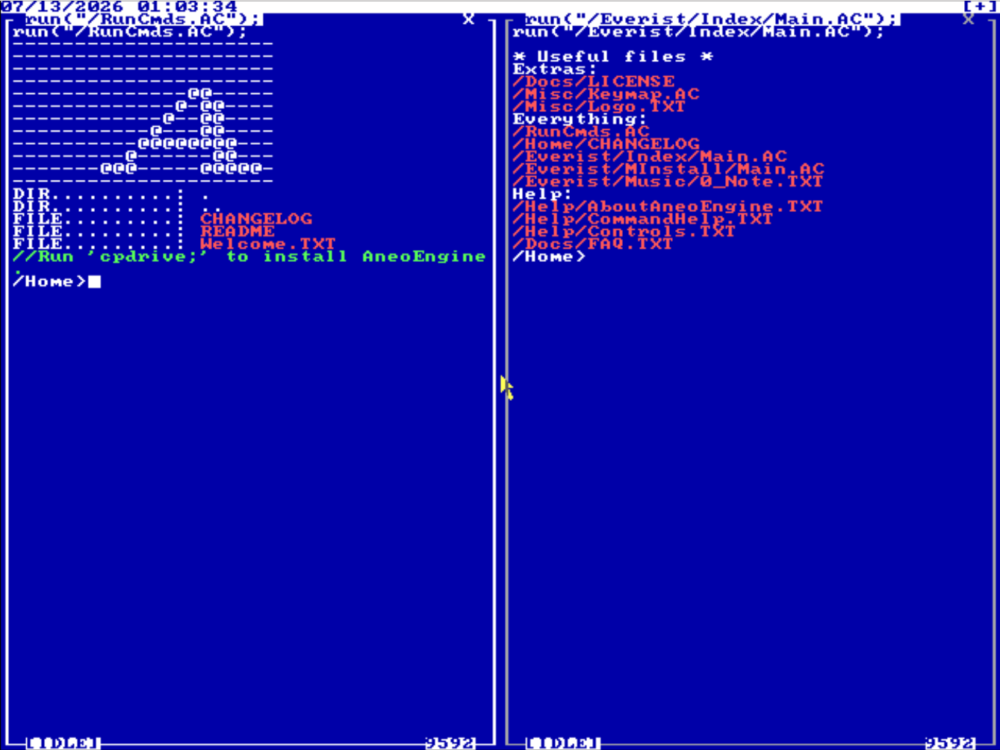

===================================================================================================== You should also see The AneoC Programming Language AneoEngine is a free, open-source, x86, kernel based, single-address mapped, multi-task, multi-cored, no internet operating system. Rust, and Java is 100% not included or welcomed in my source code. Especially not languages that require a VM to be compiled.) AneoEngine is heavily inspired by DOS, specificaly FreeDOS. I was inspired by some of it's windowing systems for file managment. AneoEngine is written in AneoC, which is an improved version of C that I made just for OS-Dev. It can also be used to write POSIX software. It is much more lightweight than GCC or any other mainstream compiler, it is a self contained compiler, freestanding development is the primary target, the compiler can target hosted and freestanding software, it has domain-specific knowledge, It removes unnecessary historical baggage, the language and toolchain are built in to AneoC, and the syntax is a bit more simple. Nothing even makes sense anymore! Why have Java, Rust, and Python, when you have C? Java is the worst piece of software humanity has ever created. And why Rust? All Rust can do other than automatic memory allocation (also known as lazyness), is more work for your hands and more lines for your source files (same thing applies for Java). AneoEngine is obviously not trying to compete with modern operating systems. In fact, Linux (specificly Debian) is objectively better than all operating systems. The idea of inplementing modern OS features, like a web browser, file browser, or even a GUI, AneoEngine will be console-only. The goal of AneoEngine is to remain small, understandable, and completely hackable (AneoEngine is meant to be crashed and tweaked.). Right now it boots from BIOS, enters protected mode, draws directly to VGA memory, handles keyboard input, runs a simple window manager, controls hardware like the PIT timer, and executes entirely without another operating system underneath it. Modern operating systems are built around networking, security layers, permissions, background services, and abstraction. AneoEngine instead focuses on exposing the machine itself. Every part of the system is visible, modifiable, and simple enough to understand from boot sector to kernel. It is less about replacing Linux and more about exploring how a computer works at the lowest practical level while building a personal operating system from scratch. There is a huge problem in today's world! Search up 'kid made operating system' on Google. The reponses speak for themselves. Seems like the internet can't understand what the actual definition of an 'operating system' is. Lets take 'AaronOS' for example. A cloud based OS is NOT an OS. An OS is defined with a bootable system that runs on bare metal. If you haven't written x86 Assembly or a C kernel, thats not an OS. Using AI also doesn't count, it only proves how lazy you are. Some idiotic Redditors think there are certain thresholds that operating systems need to meet to 'qualify' as an operating system. An OS's REAL definition is the foundational system software that manages a device's hardware and software resources. It acts as a vital bridge between the physical components. However SOME people just don't get the gig. After 10 months of operating system development, AneoEngine currently sits with about 20,144 lines of hand-crafted code. I spend almost all of my free time programming AneoEngine. I almost quit 3 times but I never gave up. My main goal of the project is to port my C compiler for a languagec I created called AneoC, which is just C but shortended, minimal, and meant to be living inside AneoEngine. Ive been programming ever since I was younger, and this will be my longest lasting project. ===================================================================================================== Downloading AneoEngine Installing AneoEngine How to install AneoEngine properly. The AneoC Programming Language Downloads F.A.Q. YouTube Videos Source Code Change Log About AneoEngine About Rocco Himel - AneoEngine is a trademark of Rocco Jose Himel. - The AneoEngine Logo is a trademark of Rocco Jose Himel. - AneoC is a trademark of Rocco Jose Himel. - The Free Disk Operating System (FreeDOS) and the FreeDOS logo are trademarks of Jim Hall. - The Portable Operating System Interface (POSIX) is a trademark of the Institute of Electrical and Electronics Engineers. - The GNU Compiler Collection (GCC) and the GCC logo are trademarks of the Free Software Foundation, Inc. - Linux and Tux the Penguin (the Linux logo) are trademarks of Linus Torvalds. - Debian and the Debian logo are trademarks of Software in Public Interest, Inc. - AaronOS and the AaronOS logo are trademarks of Aaron Adams. 
AneoEngine 1.0